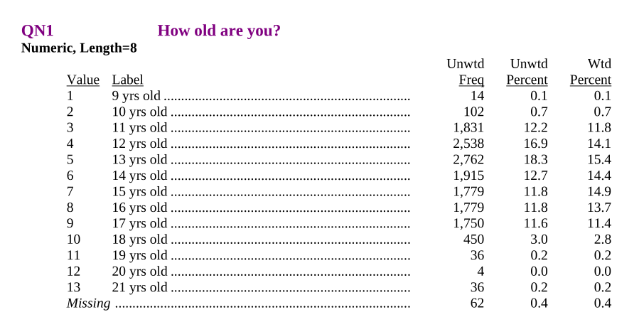
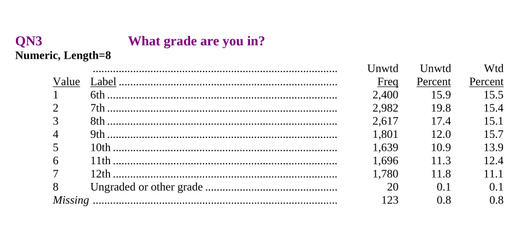
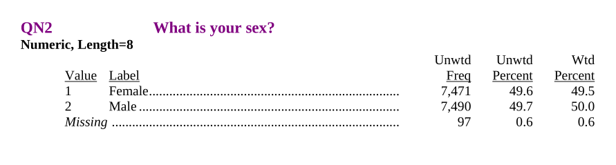
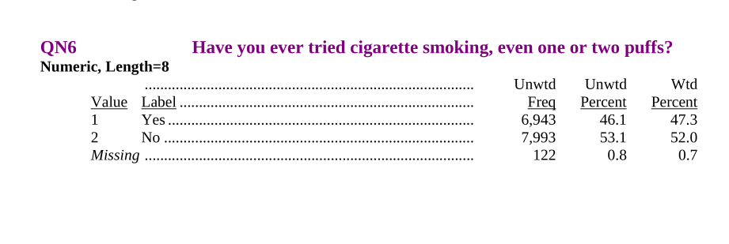

2026-01-05
Peter Ralph
https://uodsci.github.io/ds435
Set-up:
The NYTS is a CDC-funded national survey running since 1999 to assess youth rates of tobacco usage.
Datasets, by year, are currently available on this page.
We’re going to look at the 1999 version. Go read the documentation.
We’ve got the option to download an MS Access or SAS file. We’ll use the SAS version. Get the files:
mkdir -p data
wget -P data https://www.cdc.gov/tobacco/data_statistics/surveys/nyts/zip_files/1999_Codebook_Dataset_SAS.zip
unzip -d data data/1999_Codebook_Dataset_SAS.zipand then read the PDF. (5-minute reading interlude)
| STUDNTID | QN2 | QN3 | QN4A | QN4B | QN4C | QN4D | QN4E | QN4F | QN5 | ... | QN70 | QN71 | QN72 | QN1 | QN16 | WT | PSU2 | STRATUM2 | RACE | YEAR | |
|---|---|---|---|---|---|---|---|---|---|---|---|---|---|---|---|---|---|---|---|---|---|
| 0 | b'0000001' | 1 | 4 | <NA> | <NA> | <NA> | <NA> | <NA> | 1 | 6 | ... | 2 | 1 | 1 | 8 | 1 | 1.18729 | 12085 | 110 | 1 | 1999 |
| 1 | b'0000002' | 2 | 5 | 1 | <NA> | <NA> | <NA> | <NA> | 1 | 6 | ... | 2 | 6 | 6 | 8 | 8 | 1.143755 | 12085 | 110 | 1 | 1999 |
| 2 | b'0000003' | 2 | 5 | <NA> | <NA> | <NA> | <NA> | <NA> | 1 | 6 | ... | 2 | 4 | 1 | 7 | 7 | 1.143755 | 12085 | 110 | 1 | 1999 |
| 3 | b'0000004' | 2 | 5 | <NA> | <NA> | <NA> | <NA> | <NA> | 1 | 6 | ... | 2 | 5 | 4 | 7 | 2 | 1.143755 | 12085 | 110 | 1 | 1999 |
| 4 | b'0000005' | 1 | 5 | <NA> | <NA> | <NA> | <NA> | <NA> | 1 | 6 | ... | 2 | 6 | 3 | 8 | 1 | 1.143755 | 12085 | 110 | 1 | 1999 |
| ... | ... | ... | ... | ... | ... | ... | ... | ... | ... | ... | ... | ... | ... | ... | ... | ... | ... | ... | ... | ... | ... |
| 15053 | b'0015054' | 2 | 7 | <NA> | 1 | <NA> | <NA> | <NA> | <NA> | 2 | ... | 2 | 4 | 1 | 9 | 9 | 0.704504 | 910061 | 902 | 4 | 1999 |
| 15054 | b'0015055' | 2 | 7 | <NA> | 1 | <NA> | <NA> | <NA> | <NA> | 2 | ... | 2 | 1 | 1 | 9 | 1 | 0.704504 | 910061 | 902 | 4 | 1999 |
| 15055 | b'0015056' | 1 | 7 | <NA> | 1 | <NA> | <NA> | <NA> | <NA> | 2 | ... | 2 | 3 | 1 | 9 | 1 | 0.704504 | 910061 | 902 | 4 | 1999 |
| 15056 | b'0015057' | 1 | 7 | <NA> | 1 | <NA> | <NA> | <NA> | <NA> | 2 | ... | 2 | 1 | 1 | 9 | 1 | 0.704504 | 910061 | 902 | 4 | 1999 |
| 15057 | b'0015058' | 2 | 7 | <NA> | 1 | <NA> | <NA> | <NA> | <NA> | 2 | ... | 2 | 1 | 1 | 9 | 1 | 0.704504 | 910061 | 902 | 4 | 1999 |
15058 rows × 83 columns
The data should all be from 1999? Oh, good:
Are the STUDNTID numbers all unique? Oh, good.
What is WT? It’s not weight-in-pounds:
Other questions?

We’ll store all the new variables in a dictionary and make that into a DataFrame at the end (in that order, because pandas).

| QN1 | 9 | 10 | 11 | 12 | 13 | 14 | 15 | 16 | 17 | 18 | 19 | 20 | 21 |
|---|---|---|---|---|---|---|---|---|---|---|---|---|---|
| QN3 | |||||||||||||
| 6 | 4 | 97 | 1719 | 506 | 56 | 5 | 1 | 0 | 0 | 1 | 0 | 0 | 8 |
| 7 | 2 | 2 | 94 | 1939 | 847 | 82 | 13 | 0 | 1 | 0 | 0 | 0 | 2 |
| 8 | 0 | 1 | 1 | 78 | 1810 | 646 | 69 | 6 | 0 | 0 | 1 | 0 | 3 |
| 9 | 1 | 0 | 2 | 0 | 36 | 1129 | 544 | 71 | 11 | 3 | 0 | 0 | 2 |
| 10 | 0 | 0 | 1 | 0 | 0 | 41 | 1079 | 458 | 53 | 6 | 0 | 0 | 0 |
| 11 | 0 | 0 | 0 | 0 | 0 | 1 | 59 | 1174 | 420 | 34 | 4 | 1 | 3 |
| 12 | 3 | 0 | 0 | 0 | 0 | 0 | 6 | 66 | 1256 | 405 | 31 | 3 | 7 |
| 13 | 3 | 1 | 0 | 0 | 0 | 0 | 1 | 2 | 3 | 0 | 0 | 0 | 10 |

“Missing” can be a useful option for survey questions.

We want to split-apply-combine. See this list of built-in aggregation methods.
| prop_smoked | n | ||
|---|---|---|---|
| grade | sex | ||
| 6 | F | 0.13108 | 1226 |
| M | 0.186632 | 1164 | |
| 7 | F | 0.311315 | 1536 |
| M | 0.337772 | 1434 | |
| 8 | F | 0.436179 | 1280 |
| M | 0.42445 | 1325 | |
| 9 | F | 0.570439 | 869 |
| M | 0.551799 | 926 | |
| 10 | F | 0.607843 | 816 |
| M | 0.632029 | 821 | |
| 11 | F | 0.656827 | 813 |
| M | 0.704598 | 871 | |
| 12 | F | 0.715438 | 870 |
| M | 0.716186 | 903 | |
| 13 | F | 0.923077 | 13 |
| M | 0.666667 | 7 |
What about the missing values?
Question: what does pandas say the “mean” of [True, False, NA] is? (What should it say?)